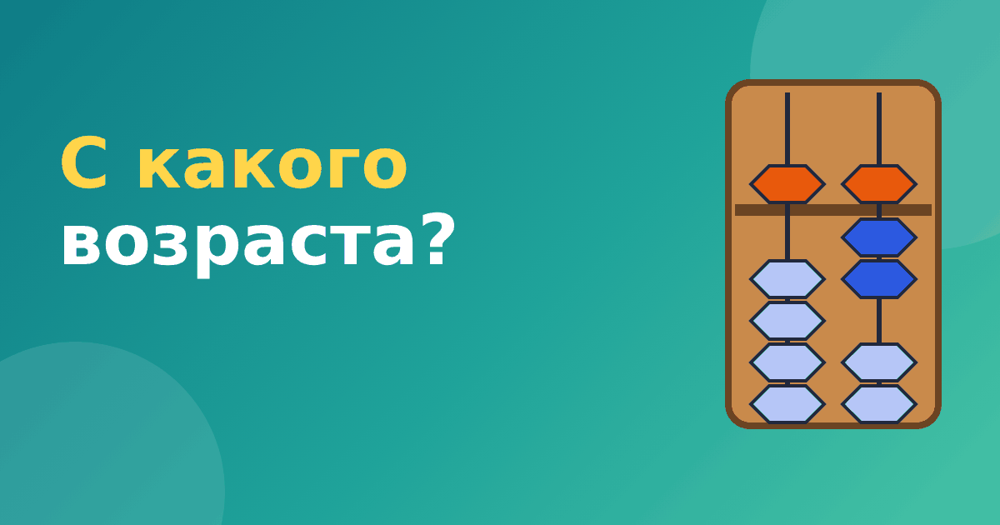

Ментальная арифметика: с какого возраста можно начинать

Школы ментальной арифметики часто принимают детей с четырёх-пяти лет, а некоторые обещают результат даже для малышей. Родители закономерно спрашивают: ментальная арифметика с какого возраста действительно имеет смысл? Универсального числа нет, но есть понятные признаки готовности. Разберём их по порядку.
Что говорят про возраст курсы
Чаще всего называют диапазон от 5 до 12 лет, но в некоторых группах занимаются и дошкольники от 4 лет. Всё зависит от программы и преподавателя. Важно понимать: возраст по паспорту сам по себе ничего не гарантирует. Одному ребёнку в шесть лет всё понятно, другому в восемь ещё трудно.
Признаки готовности
Ориентируйтесь не на дату рождения, а на то, что ребёнок уже умеет.
- Знает цифры от 0 до 9 и уверенно считает до 20.
- Понимает, что значит «прибавить» и «убавить».
- Может 10–15 минут заниматься одним делом, не отвлекаясь.
- Различает «справа» и «слева» и аккуратно двигает мелкие предметы пальцами.
- Сам интересуется счётом и не боится ошибаться.
Если большинство пунктов выполняется, можно пробовать. Если нет, лучше подождать полгода и сначала поиграть в числа, состав числа и счёт предметов.
Ментальная арифметика в 5 лет
Дошкольнику абакус может понравиться как игрушка: бусины, движение, понятный результат. В пять лет занятия лучше строить как игру и держать короткими: по 10 минут. Реальная цель на этом этапе — познакомиться со счётами и научиться набирать числа от 0 до 99. Сложение с переходом через десяток и мысленный счёт пятилетним даются труднее, и торопиться здесь не стоит.
Практичный совет: сначала убедитесь, что ребёнок хорошо понимает состав числа до 10. Тренировать его можно параллельно, например по нашему материалу про состав числа.
6–8 лет: оптимальный возраст для большинства
В этом возрасте дети уже лучше удерживают внимание, умеют читать инструкцию и понимают разряды. Им проще связать абакус со школьным счётом. Именно в первом-втором классе многие дети осваивают сложение и вычитание на абакусе вместе со школьной программой, и два занятия поддерживают друг друга.
9–12 лет
Старшие дети быстрее понимают правила, но им может быть скучновато с «детскими» бусинами. Зато они лучше удерживают образ и быстрее переходят к мысленному счёту. Если ребёнок в этом возрасте только начинает, он обычно догоняет сверстников за несколько месяцев. Поздний старт — не проблема.
Когда лучше подождать
Не начинайте, если ребёнок явно устал от других занятий, расстроен или идёт в школу и только привыкает к новому режиму. Подождите, если он путает цифры и не удерживает внимание даже на пять минут. Ничего страшного не случится, если вы начнёте на полгода позже: навык счёта быстро растёт, когда ребёнок созрел.
Как возраст влияет на программу
Чем младше ребёнок, тем больше занятие похоже на игру. С дошкольниками преподаватели используют картинки, истории, песенки и короткие упражнения по 10–15 минут. Школьникам объясняют правила напрямую и дают больше самостоятельной работы. Если вы видите, что в группе малышей занятие длится час без перерыва, это повод насторожиться: так долго маленький ребёнок не сможет сохранять внимание.
Ещё одна особенность — домашние задания. Для младших они должны быть минимальными и выполняться вместе с родителем. Для школьников 9–12 лет можно давать самостоятельную работу, но по 10–15 минут в день. Если задания растут и отнимают вечера, стоит обсудить нагрузку с преподавателем.
Частые вопросы
Правда ли, что чем раньше, тем лучше?
Нет. Раннее начало не гарантирует результат. Ребёнок, который начал в семь лет и занимается с интересом, часто догоняет того, кто начал в пять и устал от занятий.
Если ребёнок в первом классе, не будет ли слишком много нагрузки?
Если занятия короткие и не заменяют отдых, нагрузка небольшая. Но в первые месяцы школы многие дети сильно устают, поэтому можно отложить начало на пару месяцев.
Как проверить готовность за 10 минут
Лучший способ — попробовать. Откройте бесплатный модуль тренажёра «Ментальная арифметика» и посмотрите, как ребёнок воспринимает абакус: интересно ли ему двигать бусины, понимает ли он, что верхняя стоит за пять. Если интерес есть, можно идти дальше. Если нет, не заставляйте.
Дополнительно можно прочитать, с чего начать ментальную арифметику дома, и сравнить с другими методами в статье ментальная арифметика или Трахтенберг.